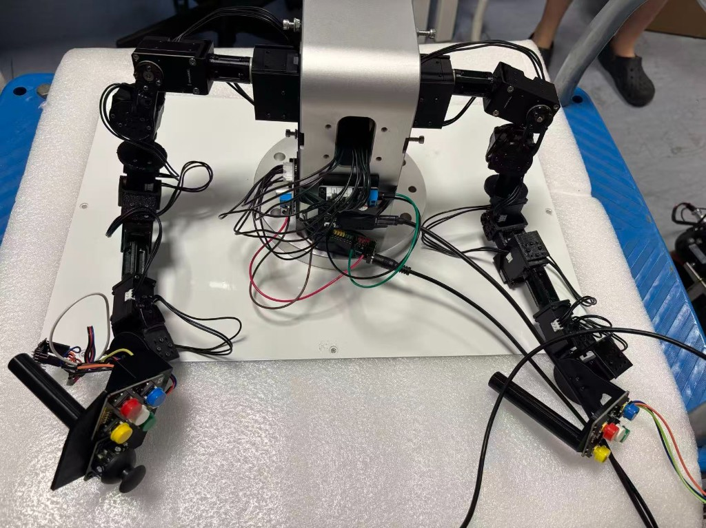

GELLO Master Arm#
The GELLO station is the bimanual leader interface for Tianji follower arms. Operators move master arms; joint commands stream to the Jetson agent, which drives the robot.


Dual GELLO master station — Dynamixel actuators with per-arm button cluster and joystick. USB connection to the Mac workstation.#
Hardware overview#
Part |
Description |
|---|---|
Dynamixel actuators |
Labeled DYNAMIXEL on each joint; USB bus to Mac |
Button cluster |
Red, blue, green, yellow — gripper, enable, mode keys |
Joystick |
Analog stick for auxiliary axes |
Central hub |
Power and USB wiring; prototype-friendly exposed harness |
Software path#
Mac USB Dynamixel
→ gello_leader/follow_runtime.py
→ agent_client → cloud relay → thor_joint_agent
→ Tianji follower arms
Configuration: client/gello/configs/teleop.mac.yaml
Setting |
Purpose |
|---|---|
Serial port |
USB device path |
Dynamixel IDs |
Per-joint addressing |
Button mapping |
S3 gripper, S4 follow unlock, etc. |
Operator controls#
Input |
Action |
|---|---|
Hold red S4 |
Unlock leader follow (required for teleop) |
Blue S3 / |
Gripper command |
Master arm motion |
Follower arm tracking |
E (workstation) |
Emergency stop |
ESP32 merged firmware#
Buttons and joystick can share one serial port via the combo firmware:
client/gello/esp32_s5_button/esp32_s5_combo.ino
Flash with Arduino IDE or arduino-cli.
Calibration#
Servo zeros and joint offsets belong in GELLO calibration YAML (future: config/client/gello_calibration.yaml). After mechanical maintenance, re-run calibration before teleop.
KILN context#
In the KILN framework, the operator site hosts the dual GELLO station plus risk network (S_\phi) for haptic guidance during demonstration and intervention.
Troubleshooting#
Symptom |
Check |
|---|---|
No follow |
USB cable, Dynamixel power, |
Follow locked |
Hold red S4 |
Jitter / wrong pose |
Recalibrate offsets |
Commands not reaching robot |
Relay connection, agent |
See also Troubleshooting.